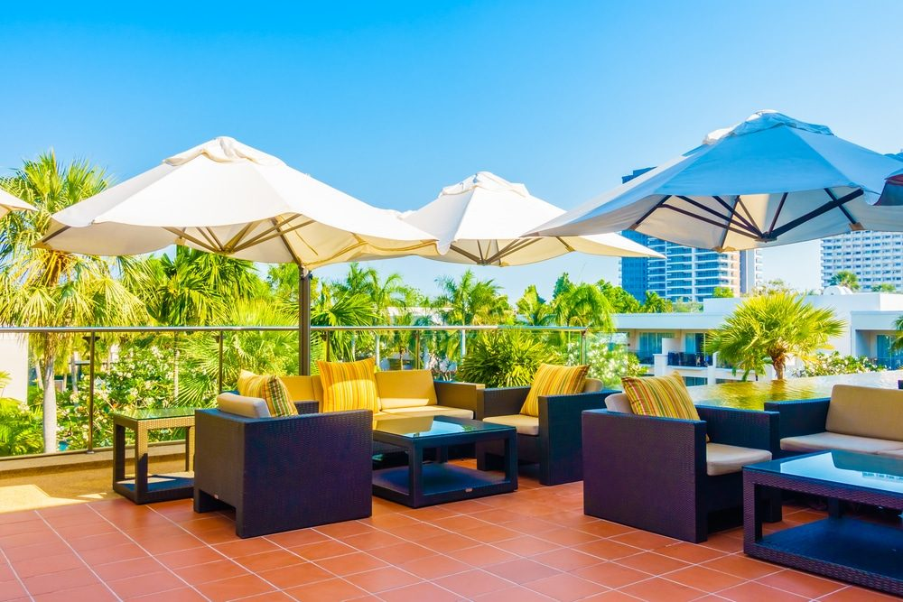

In This Guide
- Customers choose the comfortable option, and shade, rain cover, and airflow make an outdoor area comfortable enough to pick over an indoor table.
- A cover makes the outdoor space visible from the street and gives it a clear, finished look that signals a well-run business.
- Restaurants, retail stores, hotels, and offices each get something different from covered space, from extra seating to a dry waiting area.
- Design details, cover height, and durable materials decide whether the space stays inviting through Louisiana summers and storm season.
Customers make a quick decision about a place before they order, buy, or check in. If your outdoor space looks comfortable, they walk toward it. If it looks hot, wet, or bare, they keep walking. A commercial patio cover changes which of those they see.
This article looks at covered space from the customer's side of the table: what they notice, why it pulls them in, and how different kinds of businesses use it. Big Easy Fence builds commercial patio covers across the New Orleans area, and the same patterns show up whether the business sells food, goods, or services.
What Customers Notice First
People take in a lot from the sidewalk. A covered patio gives them three quick cues that an open one does not.
It Looks Finished
A defined roof, a frame, and a set of chairs under it read as a real, intentional space. A patio with a few tables in the open can read as an afterthought.
It Looks Comfortable
Shade is easy to see. Guests know at a glance that sitting there will not mean squinting into the sun.
It Looks Open for Business
When rain would empty an open patio, a cover shows that the space is in use anyway. That visible activity is one of the best signs a place is worth stopping at.
Comfort Is the Real Draw
Once guests sit down, comfort decides whether they stay. Three things matter most in this climate.
- Shade. Blocking direct sun keeps seating cooler and keeps glare off phones and menus.
- Rain cover. A roof keeps tables dry through a passing shower, so the space stays usable when an open patio would not be.
- Air and light. Height and openness affect how breezy and bright the space feels. Our guide on how high a patio cover should be explains how height changes comfort and headroom.

Different Businesses, Different Reasons
The same cover serves different goals depending on what you sell.
Restaurants and Cafes
Covered seating adds tables that work in more kinds of weather. It also gives guests a choice between the dining room and the patio, which helps on busy nights.
Retail Stores
A covered entry or sidewalk display invites people to browse in the shade and stay dry. It also gives you room for signage and seasonal displays.
Hotels and Event Venues
Guests want a place to gather that works rain or shine. A cover turns a courtyard or terrace into a dependable spot for breakfast, receptions, and evening drinks.
Offices and Service Businesses
A covered waiting or break area gives visitors and staff a pleasant place to sit outside, which supports a professional image.
Design Choices That Draw People In
The look of the cover matters as much as its function. A few choices do most of the work.
- A style that fits the building. A cover that echoes your architecture looks planned, and one that clashes looks tacked on.
- Adjustable features. Retractable sections and louvers let you open the space to the sky on nice days and close it in bad weather.
- Good lighting. Warm light after dark keeps the space busy well into the evening.
- Connected spaces. Pairing a cover with a commercial deck or a defined patio makes the whole area feel like part of the business.
Small Touches That Keep Guests Longer
Once the cover is up, a few inexpensive details make guests want to stay. Ceiling fans or floor fans move humid air. Comfortable chairs with cushions that dry quickly beat hard metal seats. Planters and screens block wind and soften the view of a parking lot. A clear sign at the door that says the patio is open, rain or shine, tells walk-ins they have somewhere to go. None of these needs a big budget, and together they turn a covered space into one people request by name.
Durability Behind the Experience
A patio only draws customers if it stays in good shape. In New Orleans that means handling strong sun, heavy rain, and hurricane season. Metal frames and quality finishes stand up well when they are properly anchored. Wood adds warmth but needs regular sealing. Whatever you choose, plan inspections after storms, keep drains clear, and repair small damage early so the cover always looks cared for. Guests notice a stained or sagging cover as quickly as they notice a fresh one.
Before you finalize a design, stand where a passerby would stand and look at it. If the cover makes the space look comfortable and finished from there, it is doing its job.
Planning Your Covered Space
Start with who you want to attract and what they need: shade, rain cover, seating, or a place to wait. Then build the design around that. When you are ready to see what fits your property, a free estimate from Big Easy Fence is a straightforward next step.
Want Your Patio to Draw a Crowd?
Tell us about your business and the space you have. We will help you plan a cover that guests will want to sit under.